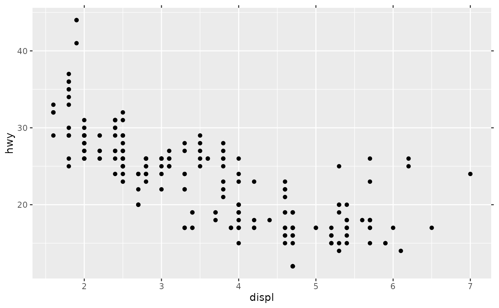

Guide primitive: line
primitive_ticks.RdThis function constructs a ticks guide primitive.
Usage
primitive_ticks(key = NULL, bidi = FALSE, theme = NULL, position = waiver())Arguments
- key
A standard key specification. See more information in the linked topic.
- bidi
A
<logical[1]>: whether ticks should be drawn bidirectionally (TRUE) or in a single direction (FALSE, default).- theme
A
<theme>object to style the guide individually or differently from the plot's theme settings. Thethemeargument in the guide overrides and is combined with the plot's theme.- position
A
<character[1]>giving the location of the guide. Can be one of"top","bottom","left"or"right".
Styling options
Below are the theme options that determine the styling of this guide, which may differ depending on whether the guide is used in an axis or in a legend context.
Common to both types is the following:
As an axis guide
axis.ticks.{x/y}.{position}an<element_line>for major tick lines.axis.minor.ticks.{x/y}.{position}an<element_line>for minor tick lines.gguidance.axis.mini.ticksan<element_line>internally inheriting from the minor ticks for the smallest ticks in e.g. log axes.axis.ticks.length.{x/y}.{position}a<unit>for the major ticks length.axis.minor.ticks.length.{x/y}.{position}a<unit>for the minor ticks length.gguidance.axis.mini.ticks.lengtha<unit>internally inheriting from the minor tick length for the smallest ticks in e.g. log axes.
As a legend guide
legend.ticksan<element_line>for major tick lines.gguidance.legend.minor.ticksan<element_line>for minor tick lines.gguidance.legend.mini.ticksan<element_line>for the smallest ticks in e.g. log axes.legend.ticks.lengtha<unit>for the major ticks length.gguidance.legend.minor.ticks.lengtha<unit>for the minor ticks length.gguidance.legend.mini.ticks.lengtha<unit>for the smallest ticks in e.g. log axes.
See also
Other primitives:
primitive_box(),
primitive_bracket(),
primitive_labels(),
primitive_line(),
primitive_spacer(),
primitive_title()
Examples
# A standard plot
p <- ggplot(mpg, aes(displ, hwy)) +
geom_point()
# Adding as secondary guides
p + guides(x.sec = primitive_ticks(), y.sec = primitive_ticks())
